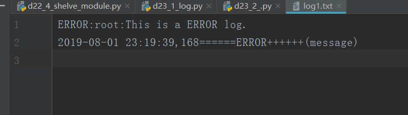

原文出处:本文由博客园博主心悦君兮君不知-睿提供。
原文连接:https://www.cnblogs.com/ruigege0000/p/11286243.html
原文连接:https://www.cnblogs.com/ruigege0000/p/11286243.html
一、logging模块讲解
1.函数：logging.basicConfig（）
参数讲解：
（1）level代表高于或者等于这个值时，那么我们才会记录这条日志
（2）filename代表日志会写在这个文件之中，如果没有这个字段则会显示在控制台上
（3）format代表我们的日志显示的格式自定义，如果字段为空，那么默认格式为：level:log_name:content
import logging
LOG_FORMAT = "%(asctime)s======%(levelname)s++++++(message)"
logging.basicConfig(filename="log1.txt",level=logging.WARNING,format=LOG_FORMAT)
logging.log(logging.INFO,"This is a INFO log")
logging.log(logging.ERROR,"This is a ERROR log.")

二、logging模块的处理流程
1.四大组件
（1）日志器（Logger）:产生日志的一个接口。
（2）处理器（Handler）：把产生的日志发送到相应的目的地。
（3）过滤器（Filter）：更精细的控制那些日志输出。
（4）格式器（Formatter）：对输出的信息进行格式化。
2.Logger
（1）产生一个日志
（2）操作
Logger.setLevel() #设置日志器将会处理的日志消息的最低严重级别
Logger.addHandler()
Logger.moveHander() #上面两个函数，为该logger对象添加和移除一个handler对象
Logger.addFilter()
Logger.removeFilter() #上面两个函数，为该logger对象添加和移除一个filter对象
Logger.debug: #产生一条debug级别的日志，同理，info,error的日志消息
Logger.exception #创建一个类似于Logger.error的日志消息
Logger.log() #获取一个明确的日志level参数类型创建一个日志记录
（3)如何得到一个logger对象
实例化；logging.getLogger()
3.Handler
（1）把log发送到指定位置
（2）方法
setLevel\setFormat\addFilter\removeFilter
（3）不需要直接使用，Handler是基类
logging.StreamHandler #将日志消息发送到输出到Stream。如std.out,std.err或任何file-like对
logging.FileHandler #将日志消息发送到磁盘文件。默认情况下文件大小会无限增长
logging.handlers.RotatongFileHandler #将日志消息发送到磁盘文件，并支持日志文件按大小切割
logging.handlers.TimeRotatingFileHandler #将日志消息发送到磁盘文件，并支持日志文件按时间切割
logging.handlers.HTTPHandler #将日志消息以GET或POST的方式发送到一个指定email地址
logging.NullHandler #该Handler实例会忽略error message 通常想被想使用logging的library
三、源码
d23_2_logger_usage.py
地址：https://github.com/ruigege66/Python_learning/blob/master/d23_2_logger_usage.py
2.CSDN：https://blog.csdn.net/weixin_44630050（心悦君兮君不知-睿）
3.博客园：https://www.cnblogs.com/ruigege0000/
4.欢迎关注微信公众号：傅里叶变换